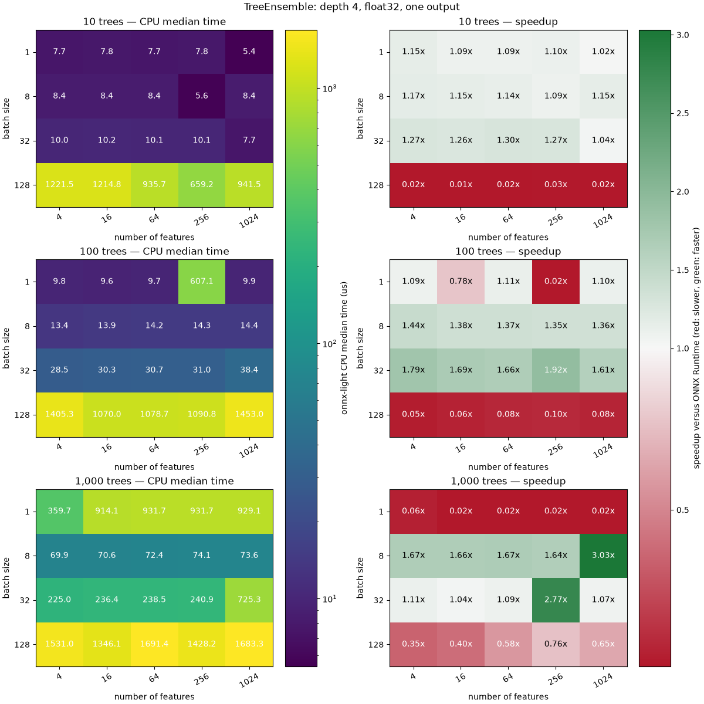

Note
Go to the end to download the full example code.
Benchmark TreeEnsemble scheduling scenarios#
This example measures TreeEnsemble-5 regression forests while varying the
number of trees, input features, and batch size. Batch size 1 is represented
explicitly because ONNX Runtime uses a specialized execution path for that
case. The largest forest contains 10,000 trees and the widest input contains
4,096 features, both representative of production models. Those largest
configurations are enabled by --big, which defaults to True on machines
with more than 64 cores and can be disabled with --no-big.
The example is standalone: it builds every model, runs ONNX Runtime and onnx-light + onnx-light-cpu, and measures both without relying on any script from the repository.
import argparse
import gc
import os
import statistics
import time
import matplotlib.pyplot as plt
from matplotlib.colors import LinearSegmentedColormap, LogNorm, TwoSlopeNorm
import numpy as np
import onnxruntime
# ``onnx-light`` ships ``onnx_light.onnx`` as a drop-in replacement for the
# ``onnx`` package; use it to build the models so the example depends on
# onnx-light rather than onnx.
from onnx_light.onnx import TensorProto, checker, helper, numpy_helper
from onnx_light.onnx.reference import ReferenceEvaluator
from onnx_light_cpu import register_kernels
cpu_count = os.cpu_count() or 1
parser = argparse.ArgumentParser(description=__doc__)
parser.add_argument("-r", "--repeat", type=int, default=10 * cpu_count)
parser.add_argument("-w", "--warmup", type=int, default=2 * cpu_count)
parser.add_argument("-t", "--max-repeat-time", type=float, default=1.0)
parser.add_argument(
"--big",
action=argparse.BooleanOptionalAction,
default=cpu_count > 64,
help=(
"include configurations with 10,000 trees or 4,096 features, "
"enabled by default on machines with more than 64 cores"
),
)
args, _ = parser.parse_known_args()
if args.repeat <= 0:
parser.error("--repeat must be greater than 0")
if args.warmup < 0:
parser.error("--warmup must be greater than or equal to 0")
if args.max_repeat_time <= 0:
parser.error("--max-repeat-time must be greater than 0")
if os.environ.get("UNITTEST_GOING"):
tree_counts = (10, 100)
feature_counts = (4, 64)
batch_sizes = (1, 32)
else:
tree_counts = (10, 100, 1000, 10000) if args.big else (10, 100, 1000)
feature_counts = (4, 16, 64, 256, 1024, 4096) if args.big else (4, 16, 64, 256, 1024)
batch_sizes = (1, 8, 32, 128)
Build one model per configuration#
Every configuration is a TreeEnsemble regression forest of depth 4 with a
single output, built directly here so the example runs on its own.
DEPTH = 4
def make_case(trees, features, rows, seed):
internal_count = (1 << DEPTH) - 1
leaf_count = 1 << DEPTH
nodes_featureids = []
nodes_splits = []
true_ids = []
false_ids = []
true_leafs = []
false_leafs = []
leaf_weights = []
for tree in range(trees):
node_offset = tree * internal_count
leaf_offset = tree * leaf_count
for local_node in range(internal_count):
nodes_featureids.append((tree + local_node) % features)
nodes_splits.append(((local_node % 7) - 3) * 0.25)
for child, ids, leafs in (
(2 * local_node + 1, true_ids, true_leafs),
(2 * local_node + 2, false_ids, false_leafs),
):
if child >= internal_count:
ids.append(leaf_offset + child - internal_count)
leafs.append(1)
else:
ids.append(node_offset + child)
leafs.append(0)
for leaf in range(leaf_count):
leaf_weights.append(((leaf + tree) % 11 - 5) / (max(trees, 1) * 8.0))
node = helper.make_node(
"TreeEnsemble",
["X"],
["scores"],
domain="ai.onnx.ml",
tree_roots=[tree * internal_count for tree in range(trees)],
nodes_featureids=nodes_featureids,
nodes_splits=numpy_helper.from_array(np.asarray(nodes_splits, dtype=np.float32)),
nodes_modes=numpy_helper.from_array(np.zeros(len(nodes_splits), dtype=np.uint8)),
nodes_truenodeids=true_ids,
nodes_falsenodeids=false_ids,
nodes_trueleafs=true_leafs,
nodes_falseleafs=false_leafs,
leaf_targetids=[0] * len(leaf_weights),
leaf_weights=numpy_helper.from_array(np.asarray(leaf_weights, dtype=np.float32)),
n_targets=1,
aggregate_function=1,
post_transform=0,
)
graph = helper.make_graph(
[node],
f"tree_grid_t{trees}_f{features}_b{rows}",
[helper.make_tensor_value_info("X", TensorProto.FLOAT, [rows, features])],
[helper.make_tensor_value_info("scores", TensorProto.FLOAT, [rows, 1])],
)
model = helper.make_model(
graph,
opset_imports=[helper.make_opsetid("", 18), helper.make_opsetid("ai.onnx.ml", 5)],
ir_version=13,
)
checker.check_model(model)
rng = np.random.default_rng(seed)
feeds = {"X": rng.standard_normal((rows, features)).astype(np.float32)}
return model.SerializeToString(), feeds
Measure both runtimes#
measure returns the median duration of a callable, stopping early once
--max-repeat-time seconds have been spent.
def measure(function, repeat, warmup, max_duration):
spent = 0.0
for _ in range(warmup):
start = time.perf_counter_ns()
function()
spent += (time.perf_counter_ns() - start) / 1e9
if spent >= max_duration:
break
timings = []
spent = 0.0
gc_enabled = gc.isenabled()
gc.disable()
try:
for _ in range(repeat):
start = time.perf_counter_ns()
function()
duration = (time.perf_counter_ns() - start) / 1e9
timings.append(duration)
spent += duration
if spent >= max_duration:
break
finally:
if gc_enabled:
gc.enable()
return statistics.median(timings)
register_kernels()
threads = min(4, cpu_count)
options = onnxruntime.SessionOptions()
options.intra_op_num_threads = threads
options.inter_op_num_threads = 1
options.execution_mode = onnxruntime.ExecutionMode.ORT_SEQUENTIAL
records = []
for seed, (trees, features, batch) in enumerate(
(trees, features, batch)
for trees in tree_counts
for features in feature_counts
for batch in batch_sizes
):
model, feeds = make_case(trees, features, batch, seed)
cpu_session = ReferenceEvaluator(
model, cpu_execution={"num_threads": threads, "affinity_policy": "none"}
)
ort_session = onnxruntime.InferenceSession(
model, sess_options=options, providers=["CPUExecutionProvider"]
)
def cpu_run(session=cpu_session, current_feeds=feeds):
return session.run(None, current_feeds)
def ort_run(session=ort_session, current_feeds=feeds):
return session.run(None, current_feeds)
np.testing.assert_allclose(cpu_run()[0], ort_run()[0], rtol=2e-5, atol=2e-5)
cpu_median = measure(cpu_run, args.repeat, args.warmup, args.max_repeat_time)
ort_median = measure(ort_run, args.repeat, args.warmup, args.max_repeat_time)
records.append(
{
"trees": trees,
"features": features,
"rows": batch,
"cpu_median_seconds": cpu_median,
"ort_median_seconds": ort_median,
"speedup": ort_median / cpu_median,
}
)
print(
f"trees={trees:6d} features={features:5d} batch={batch:4d} "
f"onnx-light-cpu={cpu_median * 1e6:10.2f}us "
f"onnxruntime={ort_median * 1e6:10.2f}us "
f"speedup={ort_median / cpu_median:.2f}x"
)
trees= 10 features= 4 batch= 1 onnx-light-cpu= 7.67us onnxruntime= 8.81us speedup=1.15x
trees= 10 features= 4 batch= 8 onnx-light-cpu= 8.39us onnxruntime= 9.84us speedup=1.17x
trees= 10 features= 4 batch= 32 onnx-light-cpu= 9.96us onnxruntime= 12.65us speedup=1.27x
trees= 10 features= 4 batch= 128 onnx-light-cpu= 1221.49us onnxruntime= 18.84us speedup=0.02x
trees= 10 features= 16 batch= 1 onnx-light-cpu= 7.75us onnxruntime= 8.43us speedup=1.09x
trees= 10 features= 16 batch= 8 onnx-light-cpu= 8.41us onnxruntime= 9.71us speedup=1.15x
trees= 10 features= 16 batch= 32 onnx-light-cpu= 10.20us onnxruntime= 12.88us speedup=1.26x
trees= 10 features= 16 batch= 128 onnx-light-cpu= 1214.85us onnxruntime= 18.15us speedup=0.01x
trees= 10 features= 64 batch= 1 onnx-light-cpu= 7.71us onnxruntime= 8.44us speedup=1.09x
trees= 10 features= 64 batch= 8 onnx-light-cpu= 8.35us onnxruntime= 9.52us speedup=1.14x
trees= 10 features= 64 batch= 32 onnx-light-cpu= 10.12us onnxruntime= 13.11us speedup=1.30x
trees= 10 features= 64 batch= 128 onnx-light-cpu= 935.72us onnxruntime= 19.42us speedup=0.02x
trees= 10 features= 256 batch= 1 onnx-light-cpu= 7.77us onnxruntime= 8.56us speedup=1.10x
trees= 10 features= 256 batch= 8 onnx-light-cpu= 5.63us onnxruntime= 6.15us speedup=1.09x
trees= 10 features= 256 batch= 32 onnx-light-cpu= 10.13us onnxruntime= 12.87us speedup=1.27x
trees= 10 features= 256 batch= 128 onnx-light-cpu= 659.18us onnxruntime= 19.05us speedup=0.03x
trees= 10 features= 1024 batch= 1 onnx-light-cpu= 5.42us onnxruntime= 5.53us speedup=1.02x
trees= 10 features= 1024 batch= 8 onnx-light-cpu= 8.39us onnxruntime= 9.69us speedup=1.15x
trees= 10 features= 1024 batch= 32 onnx-light-cpu= 7.73us onnxruntime= 8.05us speedup=1.04x
trees= 10 features= 1024 batch= 128 onnx-light-cpu= 941.50us onnxruntime= 19.41us speedup=0.02x
trees= 100 features= 4 batch= 1 onnx-light-cpu= 9.76us onnxruntime= 10.66us speedup=1.09x
trees= 100 features= 4 batch= 8 onnx-light-cpu= 13.36us onnxruntime= 19.29us speedup=1.44x
trees= 100 features= 4 batch= 32 onnx-light-cpu= 28.51us onnxruntime= 51.09us speedup=1.79x
trees= 100 features= 4 batch= 128 onnx-light-cpu= 1405.34us onnxruntime= 63.60us speedup=0.05x
trees= 100 features= 16 batch= 1 onnx-light-cpu= 9.59us onnxruntime= 7.47us speedup=0.78x
trees= 100 features= 16 batch= 8 onnx-light-cpu= 13.92us onnxruntime= 19.14us speedup=1.38x
trees= 100 features= 16 batch= 32 onnx-light-cpu= 30.27us onnxruntime= 51.29us speedup=1.69x
trees= 100 features= 16 batch= 128 onnx-light-cpu= 1069.98us onnxruntime= 66.08us speedup=0.06x
trees= 100 features= 64 batch= 1 onnx-light-cpu= 9.71us onnxruntime= 10.82us speedup=1.11x
trees= 100 features= 64 batch= 8 onnx-light-cpu= 14.22us onnxruntime= 19.46us speedup=1.37x
trees= 100 features= 64 batch= 32 onnx-light-cpu= 30.65us onnxruntime= 50.96us speedup=1.66x
trees= 100 features= 64 batch= 128 onnx-light-cpu= 1078.69us onnxruntime= 91.23us speedup=0.08x
trees= 100 features= 256 batch= 1 onnx-light-cpu= 607.12us onnxruntime= 10.93us speedup=0.02x
trees= 100 features= 256 batch= 8 onnx-light-cpu= 14.28us onnxruntime= 19.29us speedup=1.35x
trees= 100 features= 256 batch= 32 onnx-light-cpu= 30.96us onnxruntime= 59.30us speedup=1.92x
trees= 100 features= 256 batch= 128 onnx-light-cpu= 1090.84us onnxruntime= 105.51us speedup=0.10x
trees= 100 features= 1024 batch= 1 onnx-light-cpu= 9.86us onnxruntime= 10.81us speedup=1.10x
trees= 100 features= 1024 batch= 8 onnx-light-cpu= 14.38us onnxruntime= 19.52us speedup=1.36x
trees= 100 features= 1024 batch= 32 onnx-light-cpu= 38.36us onnxruntime= 61.58us speedup=1.61x
trees= 100 features= 1024 batch= 128 onnx-light-cpu= 1453.03us onnxruntime= 109.25us speedup=0.08x
trees= 1000 features= 4 batch= 1 onnx-light-cpu= 359.74us onnxruntime= 20.41us speedup=0.06x
trees= 1000 features= 4 batch= 8 onnx-light-cpu= 69.93us onnxruntime= 116.52us speedup=1.67x
trees= 1000 features= 4 batch= 32 onnx-light-cpu= 225.00us onnxruntime= 249.37us speedup=1.11x
trees= 1000 features= 4 batch= 128 onnx-light-cpu= 1531.04us onnxruntime= 531.32us speedup=0.35x
trees= 1000 features= 16 batch= 1 onnx-light-cpu= 914.15us onnxruntime= 18.29us speedup=0.02x
trees= 1000 features= 16 batch= 8 onnx-light-cpu= 70.63us onnxruntime= 117.37us speedup=1.66x
trees= 1000 features= 16 batch= 32 onnx-light-cpu= 236.37us onnxruntime= 244.87us speedup=1.04x
trees= 1000 features= 16 batch= 128 onnx-light-cpu= 1346.08us onnxruntime= 536.22us speedup=0.40x
trees= 1000 features= 64 batch= 1 onnx-light-cpu= 931.66us onnxruntime= 19.90us speedup=0.02x
trees= 1000 features= 64 batch= 8 onnx-light-cpu= 72.38us onnxruntime= 120.95us speedup=1.67x
trees= 1000 features= 64 batch= 32 onnx-light-cpu= 238.47us onnxruntime= 260.57us speedup=1.09x
trees= 1000 features= 64 batch= 128 onnx-light-cpu= 1691.39us onnxruntime= 979.52us speedup=0.58x
trees= 1000 features= 256 batch= 1 onnx-light-cpu= 931.74us onnxruntime= 20.00us speedup=0.02x
trees= 1000 features= 256 batch= 8 onnx-light-cpu= 74.09us onnxruntime= 121.47us speedup=1.64x
trees= 1000 features= 256 batch= 32 onnx-light-cpu= 240.86us onnxruntime= 668.35us speedup=2.77x
trees= 1000 features= 256 batch= 128 onnx-light-cpu= 1428.17us onnxruntime= 1091.00us speedup=0.76x
trees= 1000 features= 1024 batch= 1 onnx-light-cpu= 929.14us onnxruntime= 18.88us speedup=0.02x
trees= 1000 features= 1024 batch= 8 onnx-light-cpu= 73.58us onnxruntime= 223.03us speedup=3.03x
trees= 1000 features= 1024 batch= 32 onnx-light-cpu= 725.29us onnxruntime= 772.88us speedup=1.07x
trees= 1000 features= 1024 batch= 128 onnx-light-cpu= 1683.28us onnxruntime= 1097.42us speedup=0.65x
Plot the timings and the speedups#
by_dimensions = {(row["trees"], row["rows"], row["features"]): row for row in records}
timings = {
trees: np.array(
[
[
by_dimensions[(trees, batch, features)]["cpu_median_seconds"] * 1e6
for features in feature_counts
]
for batch in batch_sizes
]
)
for trees in tree_counts
}
speedups = {
trees: np.array(
[
[by_dimensions[(trees, batch, features)]["speedup"] for features in feature_counts]
for batch in batch_sizes
]
)
for trees in tree_counts
}
all_timings = np.concatenate([values.ravel() for values in timings.values()])
all_speedups = np.concatenate([values.ravel() for values in speedups.values()])
timing_norm = LogNorm(vmin=float(all_timings.min()), vmax=float(all_timings.max()))
speedup_norm = TwoSlopeNorm(
vmin=min(0.5, float(all_speedups.min())),
vcenter=1.0,
vmax=max(1.5, float(all_speedups.max())),
)
speedup_cmap = LinearSegmentedColormap.from_list(
"slower_neutral_faster", ["#b2182b", "#f7f7f7", "#1b7837"]
)
def speedup_annotation_color(speedup):
red, green, blue, _ = speedup_cmap(speedup_norm(speedup))
red, green, blue = (
channel / 12.92 if channel <= 0.04045 else ((channel + 0.055) / 1.055) ** 2.4
for channel in (red, green, blue)
)
luminance = 0.2126 * red + 0.7152 * green + 0.0722 * blue
return "black" if luminance > 0.5 else "white"
fig, axes = plt.subplots(
len(tree_counts),
2,
figsize=(12, 4 * len(tree_counts)),
squeeze=False,
layout="constrained",
)
for row, trees in enumerate(tree_counts):
timing_image = axes[row, 0].imshow(
timings[trees], aspect="auto", cmap="viridis", norm=timing_norm
)
speedup_image = axes[row, 1].imshow(
speedups[trees], aspect="auto", cmap=speedup_cmap, norm=speedup_norm
)
for row_index in range(len(batch_sizes)):
for feature_index in range(len(feature_counts)):
axes[row, 0].text(
feature_index,
row_index,
f"{timings[trees][row_index, feature_index]:.1f}",
ha="center",
va="center",
color="white",
)
axes[row, 1].text(
feature_index,
row_index,
f"{speedups[trees][row_index, feature_index]:.2f}x",
ha="center",
va="center",
color=speedup_annotation_color(speedups[trees][row_index, feature_index]),
)
axes[row, 0].set_title(f"{trees:,} trees — CPU median time")
axes[row, 1].set_title(f"{trees:,} trees — speedup")
for axis in axes.flat:
axis.set_xticks(range(len(feature_counts)), feature_counts, rotation=30)
axis.set_yticks(range(len(batch_sizes)), batch_sizes)
axis.set_xlabel("number of features")
axis.set_ylabel("batch size")
fig.colorbar(timing_image, ax=axes[:, 0], label="onnx-light CPU median time (us)")
fig.colorbar(
speedup_image,
ax=axes[:, 1],
label="speedup versus ONNX Runtime (red: slower, green: faster)",
)
fig.suptitle("TreeEnsemble: depth 4, float32, one output")
fig.savefig("plot_tree_ensemble_benchmark.png")
plt.show()

Total running time of the script: (0 minutes 5.399 seconds)